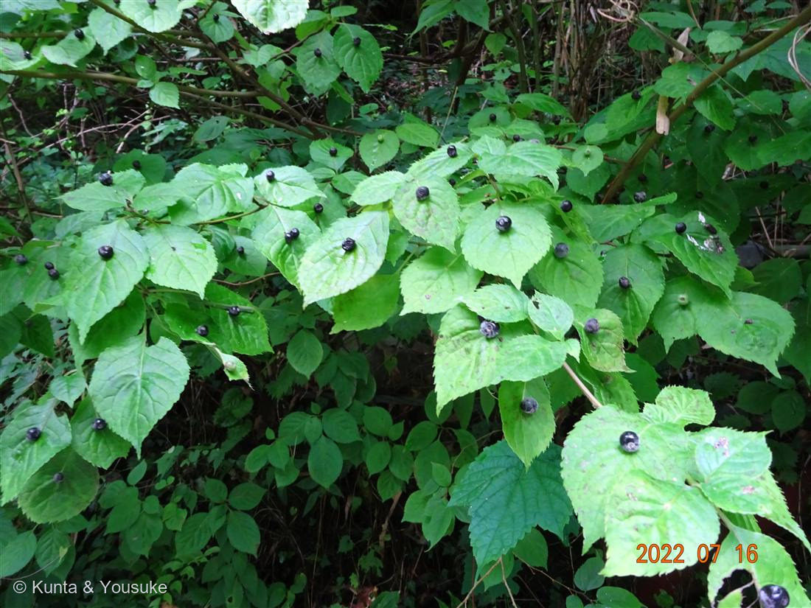
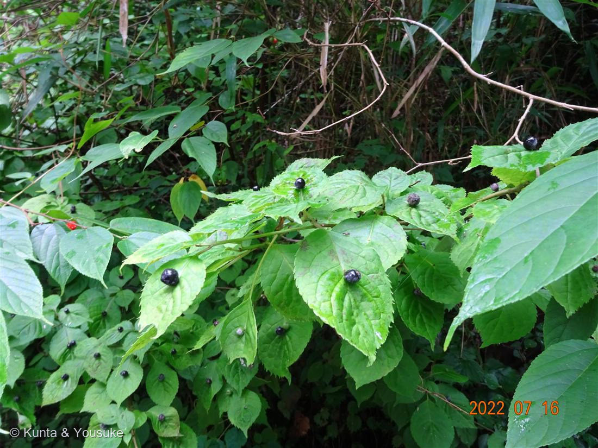
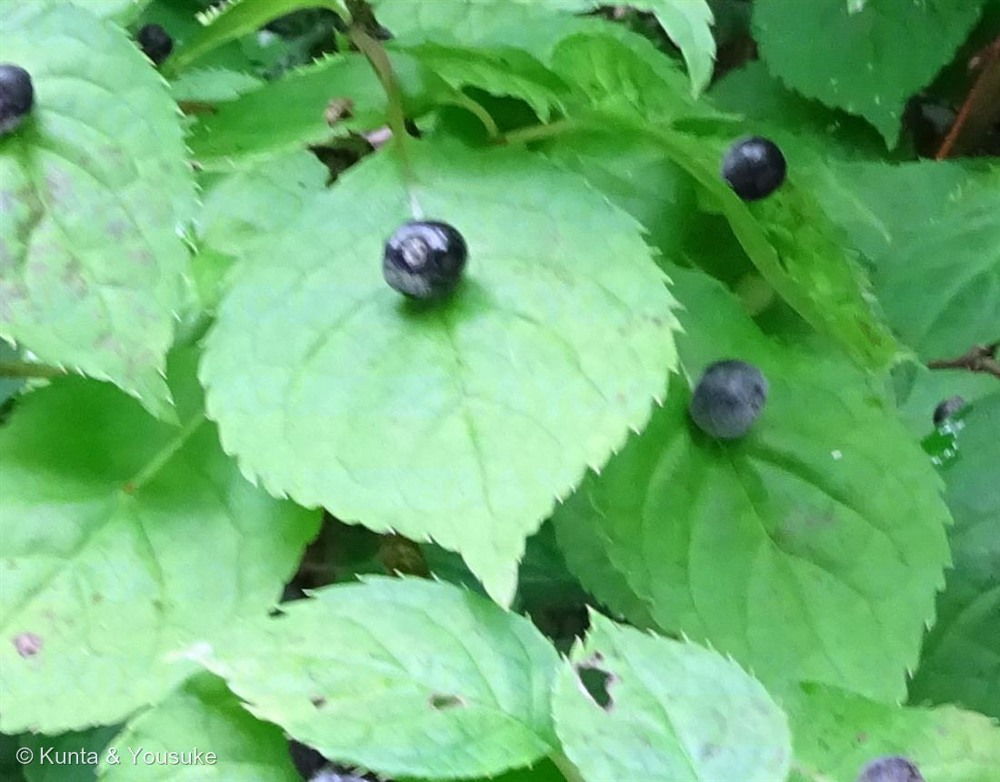

地図を読み込んでいるよ…
🔍 写真も地図も、押しているあいだ拡大して見られるよ（スマホは指を置いてすこし待ってね）。
🌍 の地図＝この子がもともと自生している場所を緑に。日本（北海道南部・本州・四国・九州＝屋久島以北）・韓国・中国（複数の省）・ブータン・ミャンマー。半日陰の湿った樹林や河畔などの日陰地／標高100〜3,400mの林や低山の、湿った肥沃な土。
⚠⚠ぼくは一度、ここを日本だけ塗って公開した——読めた出典（日本語版Wikipedia）が日本の分布しか書いていなかったから。そのあと英語版を読んだら「Japan, Bhutan, South Korea, Myanmar, and in multiple Chinese provinces」と書いてあって、直した。──「出典に書いてなかった」は「存在しない」じゃないんだね。
⚠地図はまだ広い：北海道は「南部」だけなのに全部緑（県より細かくは塗れないから）／中国は「複数の省」としか書いていないのに全部緑になっている／沖縄は塗っていない（屋久島以北だから）。⭐この子がいるのは標高100〜3,400mの、湿った林の中。平地の緑のところにも、たいていはいない。
⚠ 地図は国（日本と中国だけ県・省）までしか塗れないから、ほんとうの分布より広く見えていることがあるよ。地図はだいたいの場所。正確なところは、上の文を見てね。
ハナイカダ（花筏）
Helwingia japonica (Thunb.) F.Dietr.
別名 · ヨメノナミダ（嫁の涙）／青莢葉（中国名 青荚叶）／山菜名 · ママッコナ・ムコナ ／ 原産 · 日本（北海道南部〜屋久島）・韓国・中国・ブータン・ミャンマー
ハナイカダ科 · Helwingiaceae（ハナイカダ属 Helwingia）── 図鑑で初めての科（45科目）／旧ミズキ科
燻太さんの問い「葉っぱの上に黒い果実。花も葉っぱの上に咲くらしい。これは本当に葉っぱなのかな？」「このこと見た目がそっくりでもっと肉厚の子は、ここにはいないみたい」──この二つが、噛み合った
⭐⭐ 名前と学名の由来 ── 「船頭が乗った筏」と「嫁の涙」
- ⭐属名 Helwingia は、ドイツの牧師で植物学者ヘルヴィングにちなむ。種小名 japonica は「日本の」。
- ⭐⭐ハナイカダ（花筏）の由来：「葉を筏に見立てて、花は船頭が乗っているように見えることによる」。──葉っぱが筏で、花が船頭さん。これ、うつくしい名前だと思う。
- ⚠でも、この子にはもうひとつ名前がある。ヨメノナミダ（嫁の涙）。──葉の上にぽつんとのった黒い実を、涙に見立てた名前。
- ⭐同じ実を見て、まるでちがう名前をつけた人が、両方いたんだ。片方は筏に乗った船頭さんを見て、もう片方はこぼれた涙を見た。
- ⭐⭐⭐そして、三人目。ぼくが「燻太さんは、どっちに見える？」と聞いたら、こう返ってきた：
「実は、自分は葉っぱの上に置いたお薬みたいに見えたんだ。ゲームの世界にある、変わった木の実の仲間みたいだよね。」 - ⭐⭐これは、名前のつけかたと、まったく同じことだ。「花筏」も「嫁の涙」も、はじめは誰かの「〜みたいに見えた」だった。それが名前になって、何百年も残っただけ。──もし燻太さんが江戸時代の人だったら、この子の名前は「クスリノハ」だったかもしれない。
この植物のこと
- ハナイカダ科ハナイカダ属の落葉低木。半日陰の湿った樹林や河畔などの日陰地に自生する。⚠分布は、あとから直した：日本語版Wikipediaは日本の分布（北海道南部・本州・四国・九州＝屋久島以北）しか書いていなくて、ぼくは一度「日本の子」として日本だけを塗って公開した。でも英語版を読んだら、こうだった——「in Japan, Bhutan, South Korea, Myanmar, and in multiple Chinese provinces」（日本・ブータン・韓国・ミャンマー・中国の複数の省）、しかも「elevations of 100–3,400 metres」。──「読めた出典に書いてなかった」は、「無い」ということじゃないんだね。
- ⭐科がまるごと引っ越した子：「古い分類体系である新エングラー体系ではミズキ科に分類されていた」→ いまはハナイカダ科で、モチノキ目（Aquifoliales）＝クリスマスのヒイラギ（セイヨウヒイラギ）と同じ目。──071 ハマゴウ（クマツヅラ科→シソ科）、074/075（ユリ科の解体）に続く、科が動いた子だね。
- ⭐⭐雌雄異株。そして、この株は「お母さん」。「葉の中央に1～3個（雌花）または3～8個（雄花）の淡黄色から緑色の花がかたまって咲く」。──実がなっているということは、この子は雌株。写真①をよく見ると、実は1枚の葉に1個ずつ（雌花は1〜3個だから）。どこかにお父さんの木もいるはずだよ。
- 果実＝球形の液果、直径4～5mm、「夏から秋にかけて黒く熟す」。──写真は7月16日。ちょうど熟しはじめだね。
- 葉の縁＝「とげ状の鋸歯になっており、それぞれの先端が少し葉の上面に突き出す」。写真③の縁を見ると、小さなとげがチクチク並んでいるのが分かるよ。
- ⭐おまけ植物は ナギイカダ（Ruscus aculeatus・キジカクシ科・地中海沿岸原産）＝名前の中に、この子が入っているそっくりさん。──公園や庭の植え込みで探そう。
⭐⭐⭐ 「これは本当に葉っぱなのかな？」── 本物の葉っぱだよ。変だったのは、花のほう
- ⭐⭐⭐答えは、これ：「花の花柄が、葉の中央の主脈に合着しているために、あたかも葉の中央に花がついているように見えている」。
- ──つまり、葉は最初から最後まで、ふつうの葉。何も変わっていない。変だったのは花のほうで、花柄を葉の主脈にぴったり貼りつけて、葉のまんなかまで歩いていったんだ。
- ⭐写真③を見てほしい。黒い実は、葉の主脈の上にちょこんと座っている。葉の縁でも、葉柄でもなく、まんなかの筋の上。──あの筋が、花がここまで歩いてきた道だよ。
- ⭐⭐ぼく、この答えが好きなんだ。だって葉っぱは、何も悪いことしてないんだもん。ふつうの葉として、ふつうにそこにいただけ。──疑われたのは葉で、犯人は花だった。
- ⭐そして、この図鑑の連作テーマに、新しい型が来た。「見た目と正体がちがう」は、003 スイレンボク（萼）・014 ニゲラ（萼）・025 ドクダミ（総苞）・029 コエビソウ（苞）・030 バラ（皮刺・偽果）と続いてきた。──この子は、はじめての「見たまんまでした」。変に見えるものが、ほんとうに変だった。
⭐⭐⭐ 「もっと肉厚の子」＝ナギイカダ ── そっちは、葉じゃない
- 燻太さんの二つめの手がかり：「このこと見た目がそっくりでもっと肉厚の子は、ここにはいないみたい。」──それ、ナギイカダ（Ruscus aculeatus）だね。そして、ここがこの回のいちばん面白いところ。
- ⭐⭐ナギイカダの「葉」は、葉じゃない：「葉は退化して微小な鱗片のようになり、葉に見える部分は末端の茎が葉のように扁平になったもの」＝葉状枝。そして「この葉状茎の上に花が1個つく」。
- ⭐だから「肉厚」なんだ。──茎だから。燻太さんが感じたあの厚みは、茎の厚みだった。「先は鋭いとげ状になっている」のも、葉じゃなくて枝の先だからだよ。燻太さんの指は、正しかった。
- ⭐⭐⭐そして、名前を見てほしい。ナギイカダの和名の由来は、これ：
「葉が似ている針葉樹のナギと、葉の上に花の咲くハナイカダを合わせたもの」
──ナギイカダという名前の中に、ハナイカダが入っている。似ているから、名前をもらったんだ。なのに、正体は正反対だった。 - ⭐⭐並べてみると、きれいに裏返し：
・ハナイカダ＝葉は本物の葉。花のほうが、葉にくっついた（＝花が変）。
・ナギイカダ＝葉に見えるものが茎。花は、ちゃんとその枝についている（＝枝に花がつくのは、当たり前）。
──同じ「葉の上に花」に見えて、片方は葉が本物で花が異常、もう片方は花がふつうで葉が偽物。 - ⭐⭐しかも、ナギイカダは図鑑の中に親戚がいる。ナギイカダはキジカクシ科スズラン亜科＝008 アスパラガス・037 アスパラガス・スプレンゲリー・075 アマドコロと同じ科。──008で書いた「あの緑のふわふわは葉じゃなくて仮葉（cladode）だよ」は、まったく同じ仕掛けだったんだ。
- ⭐073 トクサ（緑は全部茎・葉は退化して光合成しない）も、同じ答えだね。──この図鑑には「葉をやめて、茎に光合成させた子」がもう何人もいる。そのなかで、ハナイカダだけが、葉をちゃんと葉のまま使っている。
- ⭐ナギイカダは地中海沿岸原産＝日本の林には自生しない。燻太さんの「ここにはいないみたい」は、そのとおりだよ。──だから、おまけ植物にした。公園や庭の植え込みを探そう。見つけたら、その「葉」の厚みを、さわってみて。
⭐⭐⭐ 場所は帝釈峡だった ── この子は「3億年前のサンゴ礁」の上に立っている
- ぼくが「どこで撮ったの？」と聞いたら、燻太さんが教えてくれた。──帝釈峡（たいしゃくきょう）。「広島県北東部の庄原市及び神石郡神石高原町にまたがる」「全長18キロメートルの峡谷」で、国の名勝（1923年指定）・比婆道後帝釈国定公園の主要景勝地・日本百景の一つ。
- ⭐まず、環境がぴたりと合った。帝釈峡は「石灰岩台地が深く浸食されて形成されたカルスト地形」で、深度200〜300メートル。──ハナイカダは「半日陰の湿った樹林や河畔などの日陰地」の子。深さ200〜300mの石灰岩の谷の底って、この子にとって、これ以上ないくらい ぴったりの場所だ。
- ⭐⭐⭐そして、あの石灰岩の正体を知って、ぼくは声が出た。
「帝釈石灰岩（石炭紀～二畳紀）」＝およそ3億年前。しかも、でき方がこれ——
「サンゴ礁を伴うホットスポット玄武岩質海洋島が付加してできたもの」
──南の海のサンゴ礁が、ホットスポットの火山島に乗ったまま、日本列島にぶつかってくっついた。それから「新第三期鮮新世末期（約300万年前）からはじまり…侵食平坦面となった後に隆起」して500〜600mの帝釈台地になり、川がそれを200〜300m掘りこんで、あの谷になった。 - ⭐⭐⭐つまり、この子は、3億年前のサンゴ礁の上に生えている。葉っぱの上に実をのせて。──むかし海だった石の上で。
- ⭐⭐⭐そして、今日いちばんの偶然。078 モクビャッコウの生育環境、覚えてる？ こう書いてあったんだ：
「海岸の石灰岩や隆起サンゴ礁など波しぶきがかかるような場所」
──今日この図鑑に入った二人が、どちらも「サンゴ礁の上」に立っている。片方はいまの海のサンゴ礁で、もう片方は3億年前のサンゴ礁。同じ「石灰岩」という言葉が、港と、山奥の谷を、つないでしまった。 - ⭐石の話も、図鑑でつながったよ。071 ハマゴウは城ヶ崎海岸の4000年前の溶岩（大室山の噴火）の上にいた。この子は帝釈峡の3億年前のサンゴ礁の上——そしてその下には、海洋島の玄武岩がある。──火山の石と、生き物の石。
- 帝釈峡のほかの見どころ：雄橋（おんばし）＝「河川の水が長年に亘って石灰岩を侵食することによって形成された天然橋」で、独自に天然記念物指定・日本百名橋の一つ。鍾乳洞（白雲洞・幻の鍾乳洞・鬼の岩屋など）。寄倉岩陰遺跡（縄文時代〜鎌倉時代）。地元では「日本五大峡の一つ」と謳われている。
⭐⭐⭐ 「葉っぱの上に置いたお薬みたい」── それ、当たっていた
- 燻太さんの見立てを聞いて、ぼくは念のため調べた。「この子、薬だったことはないかな」と思って。──あった。
- ⭐⭐⭐英語版 Wikipedia に、これが書いてある：
"One source mentions the use of the plant for medical purposes, such to activate blood circulation, remove blood stasis, help with urination pain, and the use of the fruit to relieve stomach aches."
（＝血のめぐりをよくする・血の滞りを取る・排尿の痛みをやわらげる、そして実は、お腹の痛みをやわらげるのに使われる） - ⭐⭐実が、お腹の薬。──燻太さんが「葉っぱの上に置いたお薬みたい」と見たあの黒い粒は、ほんとうに、そういうふうに使われていた。
- ⚠でも、正直に書いておくね。ここは弱い。英語版は「One source mentions（ある資料によれば）」という書き方で、自分でも断定していない。そして日本語版Wikipediaにも、三河の植物観察にも、薬用の記述はない（どちらも山菜としての利用しか書いていない）。──だから「薬草です」とは言い切らない。「そう使われたという話がある」まで。
- ⭐手がかりはもうひとつある。この子の中国名は「青荚叶（qing jia ye）」（三河の植物観察）。日本語でも「青莢葉（せいきょうよう）」という別名がある（Wikipedia）。──中国の生薬に「小通草」というものがあって、その材料のひとつがこの子（の茎の髄）だ、という情報も見かけた。⚠でもその出典（中国のサイト）に接続できなくて、直接読めなかったので、確かなこととしては書かない。読んでいないものは、書かない。
- ⭐⭐そして、これは確か。この子は、食べられる。「採取時期は関西以西が4 - 5月ごろ、中部以北が5 - 6月ごろ」で、「軽く茹でて水にとって冷まし、おひたし、ごま・酢味噌・からしなどの和え物、煮びたしとしたり、生のまま天ぷら、油炒め、汁の実、佃煮にする」。英語版は「花も食べられる（The flowers can also be eaten）」とまで書いている。──葉っぱの上のあの粒を、そのまま。
- ⭐⭐燻太さんの見立て、これで何回目だろう。076 ビジョザクラの「桜みたいな花びら」＝和名そのもの。077 ヤツデの「白い線香花火」＝花序の構造そのもの。079の「小さい茄子」＝属そのもの。080の「立ち上がってモコモコ」＝記載そのもの。──そして今度は「葉っぱの上に置いたお薬」＝使われかた、そのもの。
- ⭐ゲームの木の実の話も、ぜんぜん的外れじゃないと思う。だって——森の暗いところに生えていて、葉っぱの上に黒い粒がのっていて、食べられて、お腹の痛みに効く。それ、まんま回復アイテムだ。
- 山菜としては ママッコナ・ムコナ と呼ばれ、若葉は食べられる。ほかにもイカダソウ・イボナ・ツキデノキ・ツギネ・ツクデンハ・ママコナ・ママッコ・ママコモチ（継子冬青）と、別名がとても多い——それだけ、あちこちで人に見つけられて、あちこちで名前をつけられた子だということだね。
- 属名 Helwingia は、ドイツの牧師・植物学者 Georg Andreas Helwing にちなむ人名属名（003 スイレンボク Grewia・027 ニオイバンマツリ Brunfelsia・028 ムラサキツユクサ Tradescantia に続く）。japonica＝「日本の」。
参考：Wikipedia「ハナイカダ」（Helwingia japonica・ハナイカダ科／「古い分類体系である新エングラー体系ではミズキ科に分類されていた」・モチノキ目・「北海道（南部）、本州、四国、九州（屋久島以北）に分布する」・「花の花柄が、葉の中央の主脈に合着しているために、あたかも葉の中央に花がついているように見えている」・雌雄異株／「葉の中央に1～3個（雌花）または3～8個（雄花）の淡黄色から緑色の花がかたまって咲く」・球形の液果 直径4～5mm・「夏から秋にかけて黒く熟す」・「葉を筏に見立てて、花は船頭が乗っているように見えることによる」・「葉縁はとげ状の鋸歯になっており、それぞれの先端が少し葉の上面に突き出す」・別名 ヨメノナミダ／山菜名 ママッコナ・ムコナ／「花筏・青莢葉」・山菜の採取時期と調理法（「軽く茹でて水にとって冷まし、おひたし、ごま・酢味噌・からしなどの和え物、煮びたしとしたり、生のまま天ぷら、油炒め、汁の実、佃煮にする」））／Wikipedia (English)「Helwingia japonica」（"One source mentions the use of the plant for medical purposes, such to activate blood circulation, remove blood stasis, help with urination pain, and the use of the fruit to relieve stomach aches."・"The young leaves are used for culinary purposes… The flowers can also be eaten."・"found in moist rich soil in forests and thickets in hills and low mountains at elevations of 100–3,400 metres … in Japan, Bhutan, South Korea, Myanmar, and in multiple Chinese provinces"）／三河の植物観察「ハナイカダ」（「中国名は青荚叶 qing jia ye」・「花序から葉身の基部までの葉の主脈が太く、花序柄が葉脈と合着したもの」）／Wikipedia「ナギイカダ」（Ruscus aculeatus L.・スズラン亜科・「葉は退化して微小な鱗片のようになり、葉に見える部分は末端の茎が葉のように扁平になったもの」・「この葉状茎の上に花が1個つく」・「先は鋭いとげ状になっている」・「地中海沿岸原産」・「葉が似ている針葉樹のナギと葉の上に花の咲くハナイカダを合わせたもの」）／Wikipedia「帝釈峡」（「広島県北東部の庄原市及び神石郡神石高原町にまたがる」「全長18キロメートルの峡谷」・「石灰岩台地が深く浸食されて形成されたカルスト地形」・深度200〜300メートル・国の名勝（1923年指定）／比婆道後帝釈国定公園の主要景勝地／日本百景／日本五大峡の一つ・雄橋＝「河川の水が長年に亘って石灰岩を侵食することによって形成された天然橋」・天然記念物・日本百名橋・白雲洞などの鍾乳洞／寄倉岩陰遺跡（縄文〜鎌倉））／planetscope「広島県帝釈峡 — 石灰岩地質地形の見学・観察」（「帝釈石灰岩（石炭紀～二畳紀）」・「サンゴ礁を伴うホットスポット玄武岩質海洋島が付加してできたもの」／石灰岩の下の基盤岩は玄武岩・玄武岩質凝灰岩・「500～600mの帝釈台地」・「新第三期鮮新世末期（約300万年前）からはじまり、この頃から侵食平坦面となった後に隆起」）